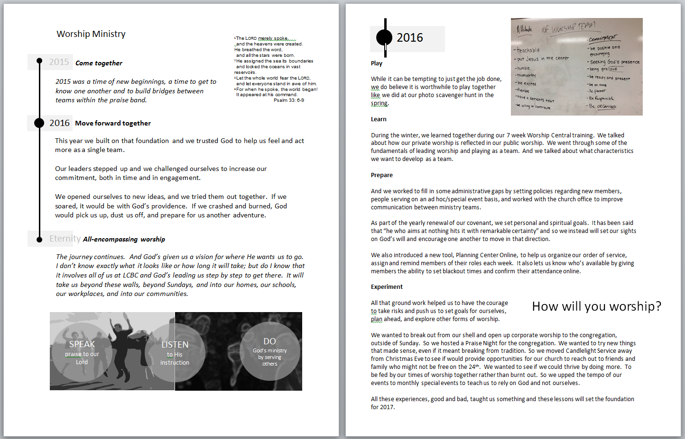

Annual Report as Historian
Great organizations have great stories to tell. Our annual reports provide a focal point for telling us where we are and how we got there. It transforms our snapshot in time into a journey. Those who experienced it can savour the moments all over again. Those who didn't can still get a taste of the challenges and celebrations.
